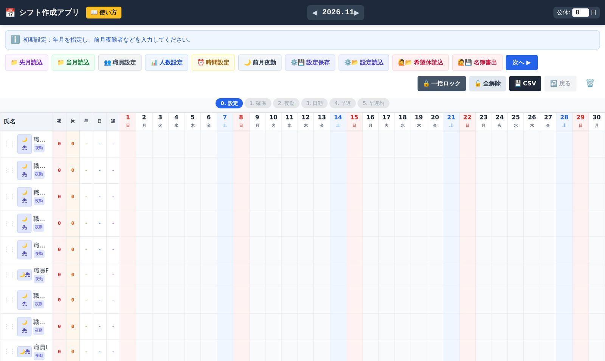
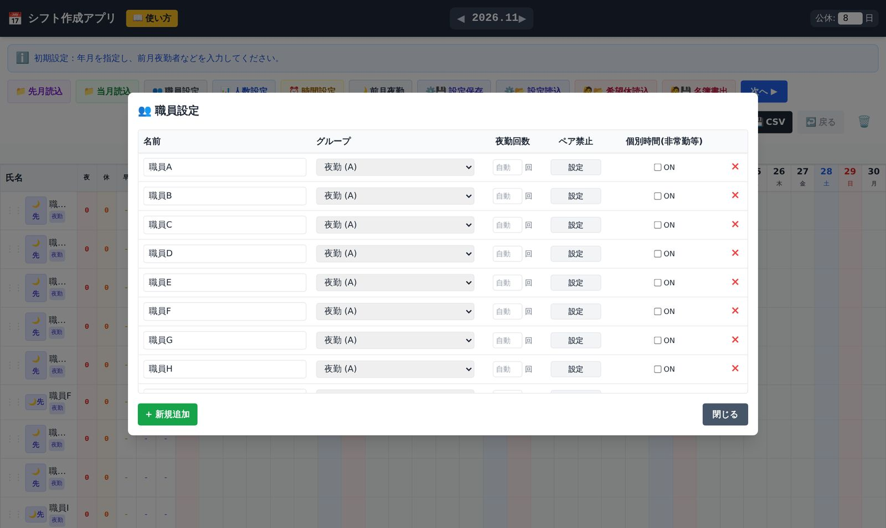
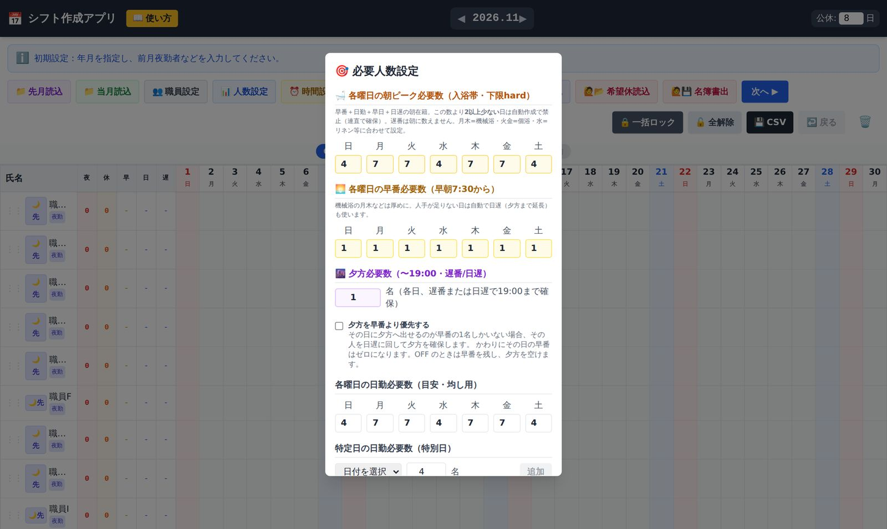
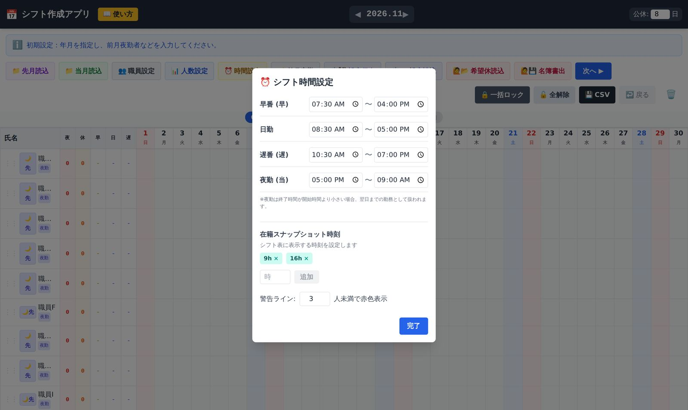
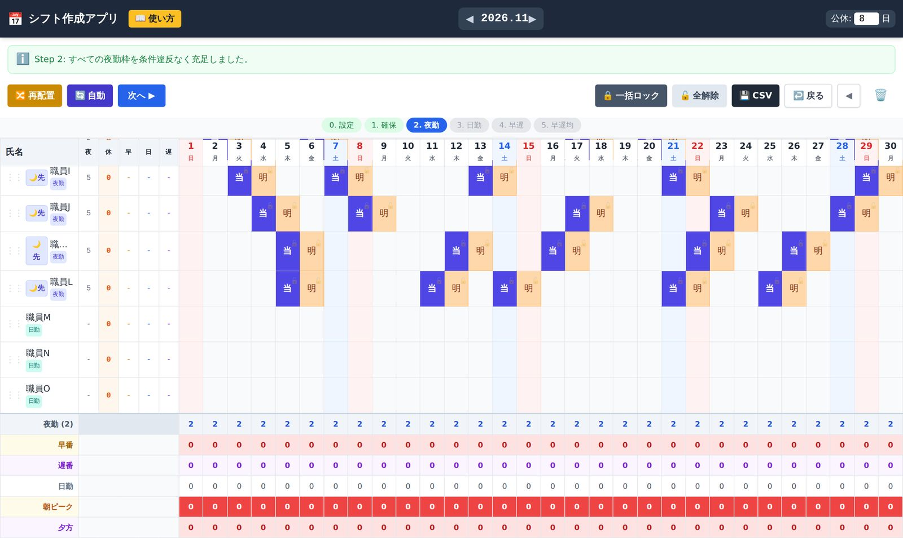
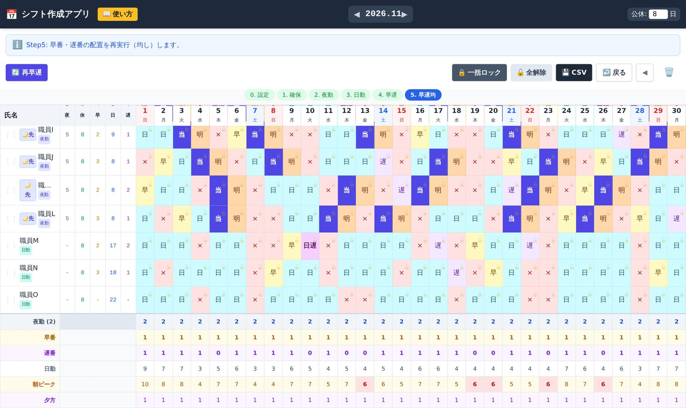
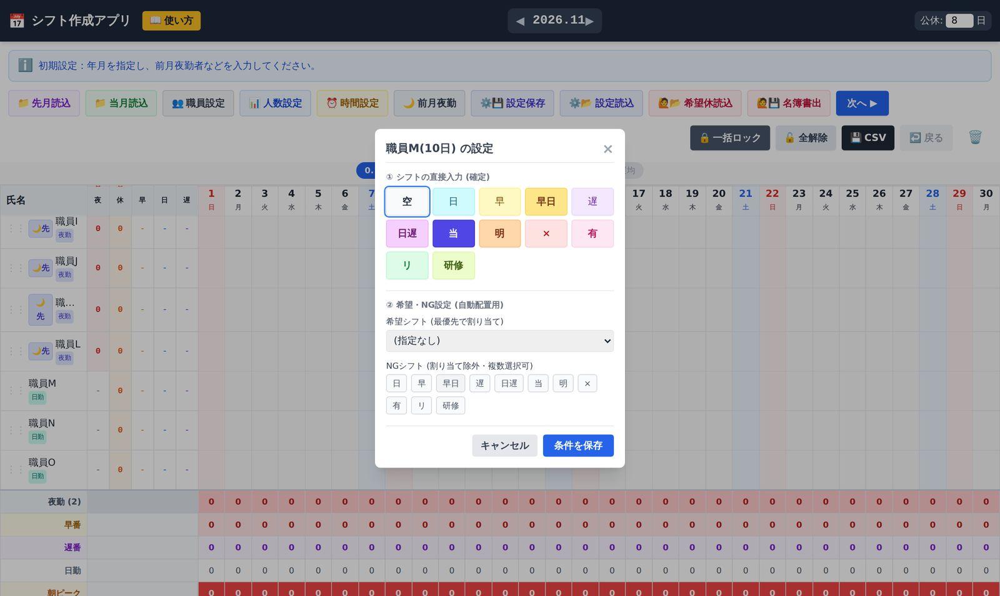
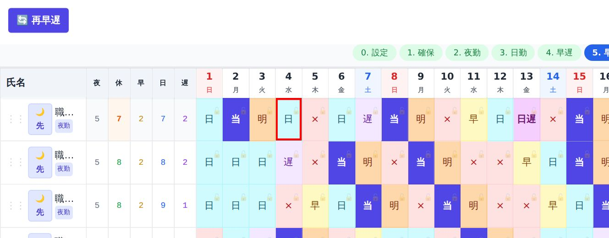
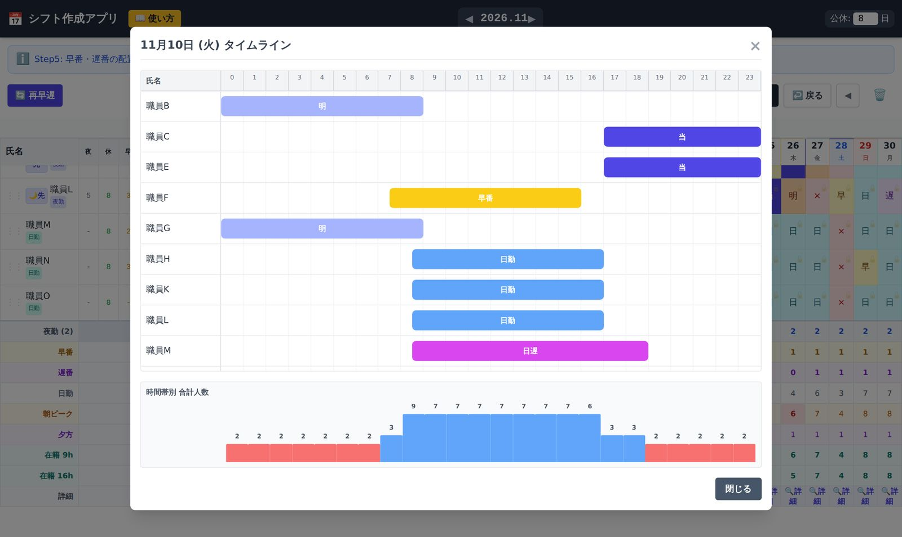

1このアプリについて
夜勤・明け・公休のサイクル、連勤の上限、職員ごとの希望や勤務条件をふまえて、1か月分のシフト案を自動で作るアプリです。二交代制・15名規模のワンフロアを基本に作っていますが、それより多い人数にも対応できます。
| できること | 夜勤の自動配置／明け・公休の展開／日勤・早番・遅番の振り分け／人数の均し／ルール違反の警告／希望休・NG勤務の反映／CSVでの読み込み・書き出し |
|---|---|
| 守るルールの例 | 夜勤人数、夜勤明けの翌日の勤務制限、連勤上限、遅番の翌日の早番など勤務間隔の短い配置の回避、一緒に夜勤に入れない職員の組み合わせ（ペア禁止）、希望休の優先 |
2はじめる前に
動作環境
- パソコンの Google Chrome または Microsoft Edge（最新版）を推奨します。スマートフォンでも表示できますが、表が大きいためパソコンでの利用をおすすめします。
- 起動するときにインターネット接続が必要です。画面の部品（React・Tailwind CSS・Babel）を外部の配信サイトから読み込むためです。入力した職員名やシフトが外部に送られることはありません。
アプリの開き方（2通り）
| Web版 | 公開ページ（このページの「アプリを開く」）をそのまま使います。インストールは不要です。作者がアプリを更新すると、自動で新しい版になります。 |
|---|---|
| ダウンロード版 | GitHubのページで Code → Download ZIP を選び、展開した index.html をダブルクリックします。手元の版のまま変わりません。 |
データの保存先
入力した内容は、使っているパソコンのブラウザの中だけに自動で保存されます（職員設定、人数・時間の設定、各月のシフト表）。サーバーには送られません。
- Web版とダウンロード版は、データが別々です。同じパソコンでも引き継がれません。どちらか一方に決めて使ってください。
- 別のパソコンや別のブラウザには引き継がれません。移すときは「設定保存・設定読込」と「CSV」を使います。
- ブラウザの閲覧データ（Cookieとサイトデータ）を削除すると、保存内容も消えます。こまめに「設定保存」と「CSV」でバックアップしてください。
- 共用パソコンでは、次に使う人にも内容が見えます。シークレットモードで使うと、ブラウザを閉じたときに消えます。
3画面の見方

| 場所 | 内容 |
|---|---|
| いちばん上の帯 | ◀ 2026.11 ▶ で作成する年月を切り替えます。公休: 9 日 はその月の公休日数です（初期値は31日の月が9日、それ以外は8日）。📖 使い方 でこの説明書が開きます。 |
| メッセージ欄 | いま何をする段階か、処理の結果、うまくいかなかった理由などが表示されます。迷ったらまずここを読んでください。 |
| 操作ボタン | ステップごとに表示が変わります。右側の 🔒 一括ロック 🔓 全解除 💾 CSV ↩️ 戻る ◀ 🗑️ はいつでも使えます（7章）。 |
| ステップ表示 | 0. 設定〜5. 早遅均 のうち、今いるステップが青く表示されます。 |
| シフト表（左） | 職員名と、その月の集計（夜＝夜勤回数、休＝公休数、早・日・遅＝早番・日勤・遅番の回数）。夜勤の職員には 🌙先 ボタンがあります。行は ⋮⋮ をドラッグして並び替えられます。 |
| シフト表（右） | 日付ごとの勤務。マスをクリックすると入力画面が開きます。土曜は青、日曜は赤の列です。 |
| 下の集計行 | 日ごとの人数（夜勤、早番、遅番、日勤、朝ピーク、夕方、指定時刻の在籍人数）。必要人数に足りない日は赤く表示されます。🔍詳細 でその日の時間帯別の人数が見られます。 |
4勤務記号の一覧
時刻は初期値です。⏰ 時間設定 で施設に合わせて変えられます。
| 記号 | 意味 | 時間（初期値） |
|---|---|---|
| 日 | 日勤 | 8:30〜17:00 |
| 早 | 早番 | 7:30〜16:00 |
| 早日 | 早番の時刻に出勤し、日勤の時刻まで勤務（早出） | 7:30〜17:00 |
| 遅 | 遅番 | 10:30〜19:00 |
| 日遅 | 日勤の時刻に出勤し、遅番の時刻まで勤務 | 8:30〜19:00 |
| 当 | 夜勤（当直） | 17:00〜翌9:00 |
| 明 | 夜勤明け | ― |
| × | 公休 | ― |
| 有 | 有給休暇 | ― |
| リ | リフレッシュ休暇（特別休暇） | ― |
| 研修 | 研修 | ― |
5最初の準備（初回のみ）
はじめに職員と必要人数を登録します。一度登録すれば、翌月からはそのまま使えます。
5-1 職員設定（👥 職員設定）

| 項目 | 内容 |
|---|---|
| 名前 | 職員名。CSVの読み込みや希望休の取り込みでは、この名前で照合します。 |
| グループ |
夜勤 (A)：夜勤に入る常勤職員 日勤 (B)：日勤・早番・遅番に入る職員 日勤 (C:早遅なし)：早番・遅番に入らない職員（時短勤務など） 夜勤 (D:当明当明 不可)：夜勤に入るが、夜勤を続けて入れない職員（負担軽減のための夜勤） |
| 夜勤回数 | その職員の月の夜勤回数の目標です（夜勤グループのみ）。 |
| ペア禁止 | 設定 から、同じ夜勤に一緒に入れない職員を選びます。 |
| 個別時間（非常勤等） | ONにすると、その職員だけの条件を設定できます。
|
| 追加・削除 | ＋ 新規追加 で職員を追加、行の右端の × で削除します。 |
5-2 必要人数（📊 人数設定）

| 項目 | 内容 |
|---|---|
| 朝ピーク必要数 | 入浴などで人手が要る朝の時間帯に、在籍していてほしい人数（早番・日勤・早日・日遅の合計。遅番は含みません）。曜日ごとに設定します。 |
| 早番必要数 | 朝7:30から必要な早番の人数。人手が足りない日は、自動で「日遅」も使って調整します。 |
| 夕方必要数 | 19:00まで残る人数（遅番または日遅）。「夕方を早番より優先する」をONにすると、早番を減らしてでも夕方を確保します。 |
| 日勤必要数 | 曜日ごとの日勤の目安。人数の均し（偏りの調整）の基準になります。行事などの日は「特定日」で個別に設定できます。 |
| 夜勤必要数 | 1日あたりの夜勤人数（初期値2名）。 |
5-3 時間と表示（⏰ 時間設定）

「在籍スナップショット時刻」に9時・16時などを追加すると、その時刻に勤務している人数が表の下に表示されます。「警告ライン」の人数より少ないと赤く表示されます。
6毎月の作成手順（6ステップ）
画面上部の 次へ ▶ で順に進みます。各ステップの後に表を見て、気になるところは手で直してから次へ進んでください。前のステップに戻るときは ◀ を押します。
🛡️ 不足日ブロック を押すと、希望休などで人手が足りなくなりそうな日を見つけて、日勤を先に入れておきます。該当する日がなければ、メッセージ欄にそう表示されるので、そのまま次へ進みます。🔀 再配置 で別の入れ方を試せます。
🔄 自動 を押すと、夜勤人数・ロックしたマス・ペア禁止などのルールを守って夜勤を配置します。🔀 再配置 を押すたびに、同じ品質の別パターンを探します（品質が下がる案しか見つからない場合は、配置を変えません）。

特定の職員の夜勤を先に決めたいときは、名前の左の 🌙先 を押すと、その職員の夜勤を目標回数まで優先して配置し、ロックします。
🤖 日勤一括配置 を押すと、夜勤明けと公休のサイクルを展開し、公休の数をそろえ、残りに日勤を入れ、日ごとの人数の偏りを均します。連勤上限のために公休が設定より多くなった職員がいる場合は、メッセージ欄に名前が表示されます。
⚖️ 早遅 を押すと、日勤の中から早番・遅番（必要に応じて早日・日遅）を振り分けます。遅番の翌日に早番が入るような、勤務間隔の短い配置は避けます。
🔄 再早遅 を押すたびに、早番・遅番の別パターンを作ります。偏りが少ない案になるまで何度か試してください。

仕上げ
- 表全体を見て、赤い枠や赤い集計がないか確認し、必要なら手で直します。
- 確定した勤務は 🔒 一括ロック で固定します（この後に自動処理をやり直しても動きません）。
- 💾 CSV でシフト表を書き出し、保存します。翌月の「先月読込」にもこのファイルを使います。
7手で直す・確定する
マスをクリックして入力する

| ① シフトの直接入力（確定） | 押した勤務がそのマスに入ります。「空」でマスを空にします。 |
|---|---|
| ② 希望・NG設定（自動配置用） | 希望シフト：自動配置のとき最優先で入れる勤務（希望休など）。入ったマスには「希」の印が付きます。 NGシフト：その日に入れない勤務（複数選べます）。マスに「NG」の印が付きます。 選んだら 条件を保存 を押します。 |
ロック（固定）
マスの右上の 🔓 を押すと 🔒 になり、そのマスは自動処理で変わらなくなります。もう一度押すと解除できます。
| 🔒 一括ロック | 入力済みのマスをすべてロックします。 |
|---|---|
| 🔓 全解除 | すべてのロックを解除します。 |
| ↩️ 戻る | 直前の操作を取り消します。 |
| ◀ | ひとつ前のステップに戻ります。 |
| 🗑️ | その月のシフト表・ロック・希望/NGをすべて消して、最初からやり直します。職員設定や人数設定は消えません。 |
8警告の見方と確認

| 表示 | 意味 |
|---|---|
| マスの赤枠 | 次のどれかに当たります。 ・連勤が上限を超えている（個別の指定がなければ4連勤まで） ・5日の間に夜勤が3回以上入っている（夜勤過密） ・夜勤明けの翌日に出勤している（D群は夜勤も対象） |
| 「夜」の数字が赤 | 夜勤回数が5回未満か9回以上、または目標回数と違う |
| 「休」の数字がオレンジ | 公休数が設定した日数と違う |
| 下の集計行が赤 | その日の人数が必要数に足りない |
時間帯ごとの人数を見る

9ファイルの読み込み・書き出し
| ボタン | 内容 | 形式 |
|---|---|---|
| 💾 CSV | 表示中の月のシフト表を書き出します（ファイル名：シフト表_2026年11月.csv など）。Excelで開けます。 | CSV |
| 📁 先月読込 | 前月のCSVを読み込み、月をまたいだ連勤・夜勤のチェックに使います。前月末日が夜勤の職員は、自動で「前月夜勤」に設定されます。 | CSV |
| 📁 当月読込 | 当月のCSVを読み込みます。入力済みのマスは自動でロックされます（全解除で外せます）。職員の一覧もCSVの内容に置き換わり、CSVにない職員は職員設定から外れます。同じ名前の職員は、個別の設定が引き継がれます。 | CSV |
| ⚙️💾 設定保存 | 職員・人数・時間の設定を保存します。 | JSON |
| ⚙️📂 設定読込 | 保存した設定で上書きします。作成中のシフト表は残り、同じ名前の職員は引き継がれます。 | JSON |
10希望休をフォームで集める（応用）
Googleフォームで集めた希望休・希望勤務・NG勤務を、まとめて取り込むこともできます。
- 🙋💾 名簿書出 で職員名簿のCSVを書き出し、集計用のGoogleスプレッドシートの「職員マスタ」シートに貼り付けます（フォームの氏名の選択肢に使います）。
- 職員がフォームで希望を入力します。
- 集計用のスクリプト（Google Apps Script）が書き出したJSONファイルを、🙋📂 希望休読込 で読み込みます。
- 取り込み結果（職員登録がない氏名、未提出の職員、既存のシフトを上書きした箇所など）が画面に一覧で表示されるので、確認します。
11困ったときは
夜勤人数を満たせない、と表示される
夜勤ができる職員に対して、必要な夜勤の数が多すぎるか、公休・NG・ロック・ペア禁止などの条件が重なっています。メッセージに表示された不足日の前後で、希望休やNGを確認し、ロックを外す、夜勤回数の目標を見直す、などを試してください。条件の一部をゆるめたシフトになってしまう
職員数が最小限のときや、希望休・勤務指定が特定の期間に集中したときは、すべての条件を満たすシフトが物理的に組めないことがあります。その場合は条件の一部をゆるめた案が出ます。どの条件を優先するかは、担当者が判断して手で調整してください。公休が設定より多い職員がいる
連勤上限を守るために、休みを増やさざるを得なかった職員です。ステップ3のメッセージに名前が表示されます。連勤上限や曜日固定の設定、日勤の必要数を見直すか、手で調整してください。別のパターンを見たい
ステップ2の 🔀 再配置、ステップ5の 🔄 再早遅 を押すたびに別のパターンを探します。気に入った部分は 🔒 でロックしてから押すと、その部分は残ります。操作を間違えた
↩️ 戻る で直前の操作を取り消せます。最初からやり直す場合は 🗑️ を押します（職員設定などは残ります）。入力したデータが消えた
ブラウザの閲覧データを削除した、別のブラウザで開いた、Web版とダウンロード版を取り違えた、のいずれかが考えられます。保存しておいた設定ファイルとCSVを、⚙️📂 設定読込 と 📁 当月読込 で読み込んでください。別のパソコンで続きを作りたい
元のパソコンで ⚙️💾 設定保存 と 💾 CSV を行い、そのファイルを新しいパソコンで読み込みます。ファイルには実名が入っているので、施設のルールに沿って受け渡してください。画面が真っ白で表示されない
起動時にインターネットにつながっていない可能性があります。接続を確認して、ページを再読み込みしてください。施設のネットワークで外部サイトが制限されている場合は、情報システムの担当者にご相談ください。12注意事項・ライセンス
- 作成されたシフトはシフト案です。必ず担当者が内容を確認し、施設の規程や労務のルールに沿っていることを確かめたうえで使ってください。
- 非営利目的に限り、無償で利用・改変できます。有償での販売や商業的な再配布は禁止します（詳しくは同梱の LICENSE をご覧ください）。
- 本ソフトウェアの使用により生じたいかなる損害についても、著作権者は責任を負いません。
第37回全国介護老人保健施設大会 栃木（2026年10月）演題「現場発シフト自動作成アプリの開発と実践」で紹介したアプリです。